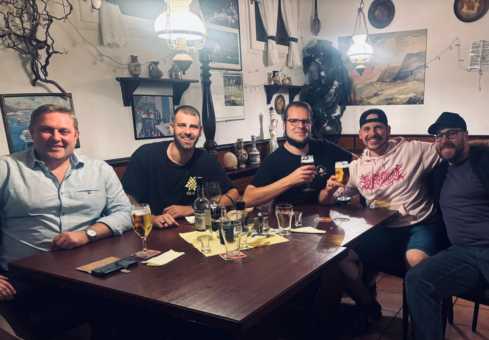

Über uns
Wir sind Philosophers und heißen dich herzlich willkommen!

[Piotr, Lukas, Simon, Nils, Dennis]
Wir sind eine Metalcore-Band aus Hamburg. Unsere Musik definiert sich durch kraftvolle Riffs,
kontrastreiche Vocals, explosive Drums und einen eingängigen Bass.
Unser Name spiegelt sich auch in unseren Lyrics wider,
die bekannte und unbekannte philosophische Themen und
Geschichten aufgreifen und interpretieren
- oder spannende Geschichten, die uns bewegen und
durch unser philosophisches Kaleidoskop betrachtet werden.
Die Band wurde 2021 von unseren Gitarristen Dennis und Lukas gegründet.
Das Schlagzeug übernimmt Piotr seit 2024.
Seit 2026 übernehmen Simon den Bass und Nils die Vocals.
Wir treffen uns regelmäßig zum Proben,
haben bereits ein Set für unsere Live-Auftritte zusammengestellt und
arbeiten kontinuierlich an neuer Musik,
während wir dabei sind, die Musik aus unseren Köpfen in den
Proberaum und in Zukunft auch online zu bringen!
Wir brennen schon auf unseren ersten Auftritt und freuen uns,
wenn du uns dabei begleitest!
Stay tuned! 🚀